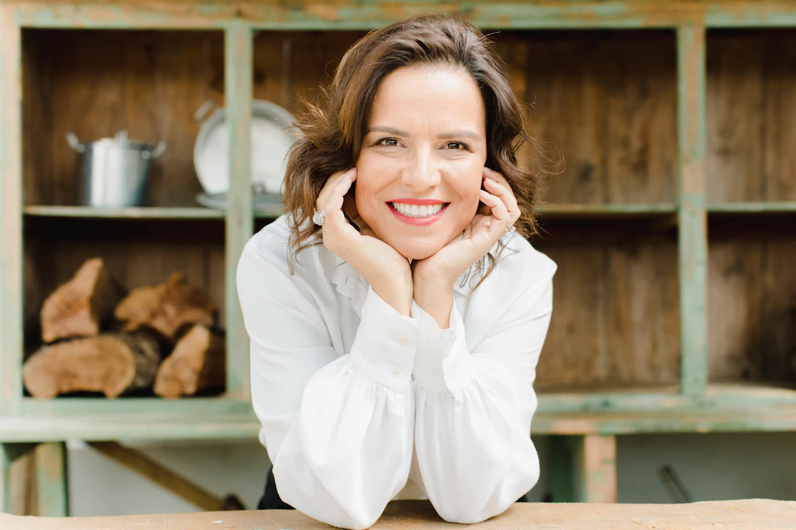
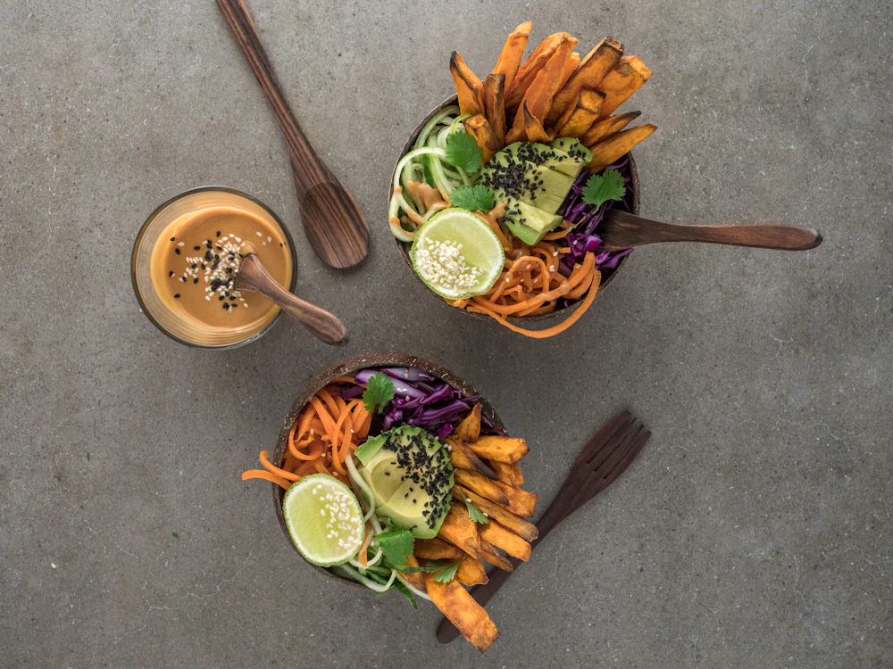

Plazas libres en noviembre
Comer bien sin contar calorías.
Soy nutricionista y te ayudo a cambiar tu relación con la comida con un plan hecho para tu vida real: tu horario, tus gustos y tu ritmo.

Laura RíosDietista-nutricionista · Col. 12345
↗personas acompañadas0
siguen su plan a los 6 meses0
Próxima consulta libre
Jueves · 18:30
Online o en Madrid centro"Por primera vez no siento que estoy a dieta. He bajado 7 kilos comiendo de todo."
— Marta, 34 años
@laura.nutri
48k seguidores en Instagram
48k seguidores en Instagram